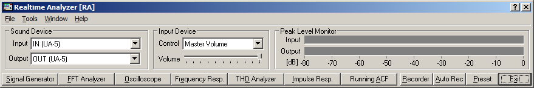

DSSF3 > RA > Reference Manual
Main Window
- Menu bar
- How to adjust the font size and window size
- Input Device and Peak Level Monitor
- Function buttons on the main window of RA
Selection of the input and output device is done in the main window of RA. Adjustment of the input volume is done by the Windows volume control or by the volume control in RA's main window. These two controls are interlinked for ease of use. Measurement functions such as signal generator and FFT analyzer can be accessed from the named buttons in the bottom of the main window.

DSSF3 > RA > Reference Manual